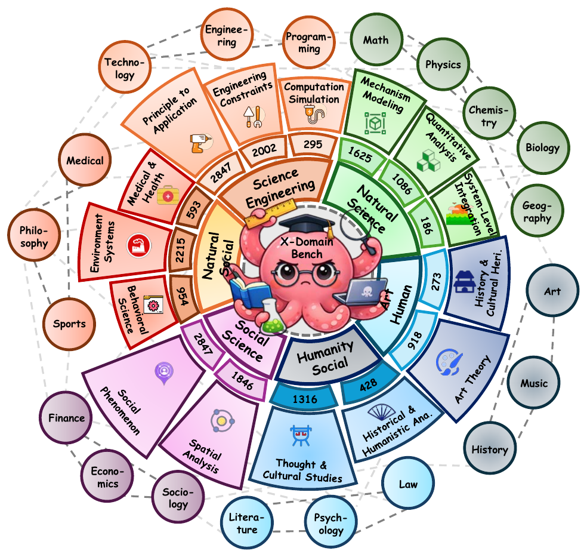
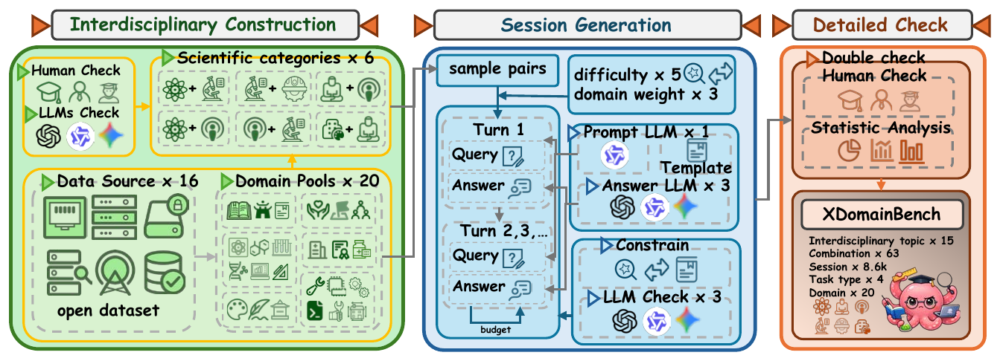
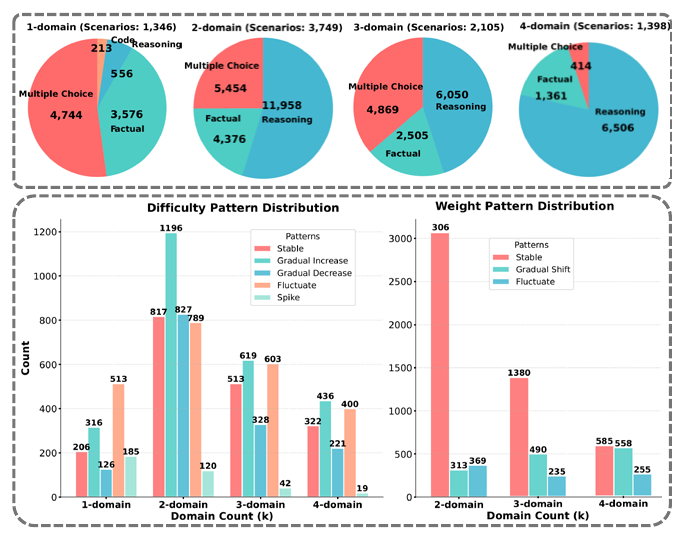
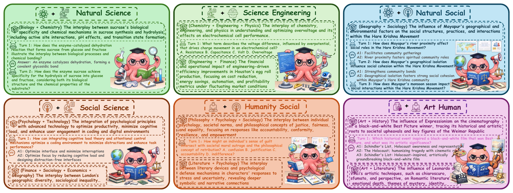
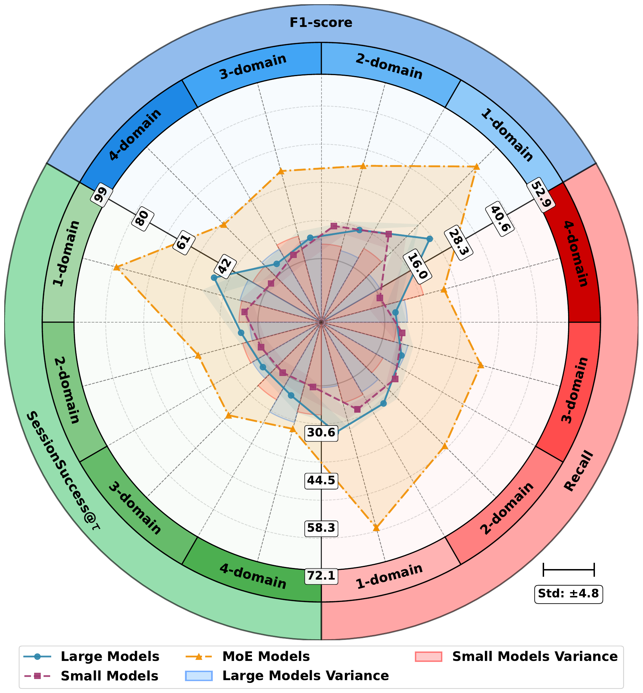
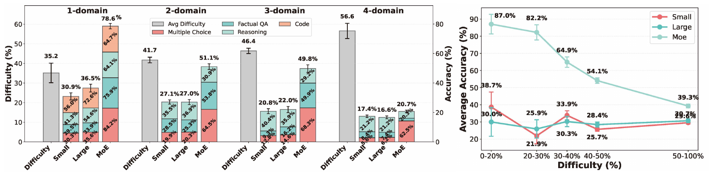
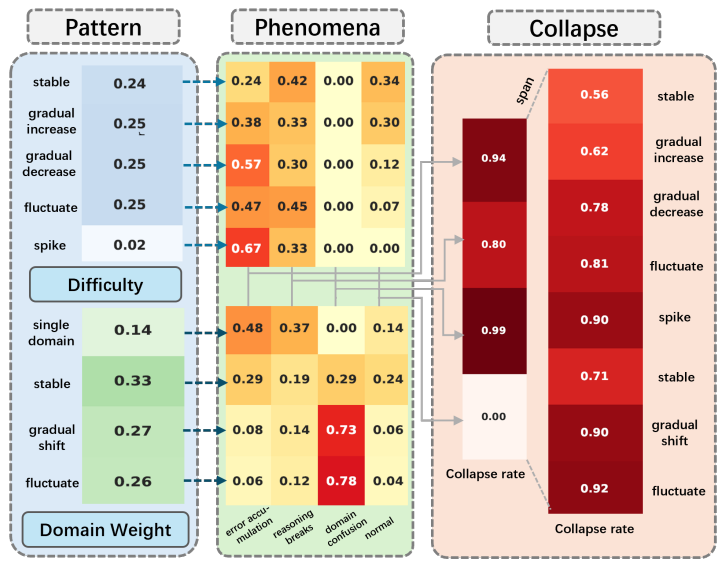
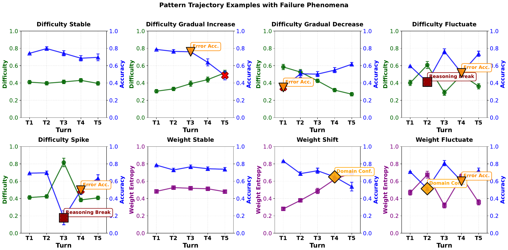

8,598
interactive sessions
ICML 2026 · AI for Science
Diagnosing reasoning collapse in high-dimensional scientific knowledge composition with a controllable interactive benchmark.

interactive sessions
scientific domains
task categories
composition orders
interdisciplinary categories
Large Language Models are increasingly used for knowledge synthesis, but their compositional generalization in scientific knowledge remains under-characterized. Existing benchmarks mostly focus on single-turn restricted settings and fail to capture capability boundaries in realistic interactive workflows.
XDomainBench introduces a diagnostic benchmark for interactive interdisciplinary scientific reasoning. It formalizes composition order and mixture structure, covering 8,598 interactive sessions across 20 domains and 4 task categories, with realistic trajectory patterns over difficulty and domain-mixture dynamics.
Large-scale evaluation reveals systematic reasoning collapse as composition order increases, driven by two root causes: direct difficulty growth from domain composition and indirect interaction-amplified failures such as error accumulation, reasoning breaks, and domain confusion.
Takeaway. XDomainBench reframes interdisciplinary reasoning evaluation from isolated QA to controllable multi-turn composition stress testing.
Real AI4S reasoning is multi-turn and cross-domain. Most prior benchmarks evaluate isolated queries and cannot separate whether failures come from missing knowledge or from fragile joint reasoning under composition.

Takeaway. The key novelty is diagnostic controllability: it separates knowledge coverage limits from compositional reasoning fragility.
Single-domain questions are easy; the failure is compositional. XDomainBench scales the number of domains a question fuses and exposes a steep reasoning collapse — turning a diffuse failure mode into a measurable, diagnosable axis. (trend shown is illustrative)

Stage 1 selects interdisciplinary domain sets. Stage 2 generates sessions under trajectory targets with validation. Stage 3 performs detailed checks and human quality review.

The benchmark does not only increase domain count; it controls which domain combinations appear and how they evolve by turn. This avoids easy synthetic mixtures and makes failures more faithful to real interdisciplinary workflows.
A key outcome in the paper is that higher-order composition introduces integrative reasoning overhead even at early turns, before long-horizon drift effects begin to dominate.
Full split includes 8,598 sessions, 52,582 turns, and an average of 6.12 turns per session, giving enough trajectory depth to expose interaction-amplified failures.
Takeaway. Benchmark construction jointly controls domain order, trajectory complexity, and validation gates, enabling mechanism-level analysis rather than score-only comparison.
dataset/full_dataset: full benchmark for final reporting.dataset/small_dataset: compact benchmark for rapid iteration.evaluation/: unified evaluator with history enabled by default.
Turn-level metrics: Recall and F1.
Session-level metric: SessionSuccess@tau, marking a session successful if
correctness rate exceeds a fixed threshold.
| Split | JSON files | Scenarios | Turns |
|---|---|---|---|
| full_dataset | 64 | 8,598 | 52,582 |
| small_dataset | 64 | 1,137 | 6,659 |
Multiple Choice, Factual QA, Reasoning, and Code, with normalization in aggregated analyses.

| Order k | Sessions | Share |
|---|---|---|
| k=1 | 1,346 | 15.7% |
| k=2 | 3,749 | 43.6% |
| k=3 | 2,105 | 24.5% |
| k=4 | 1,398 | 16.3% |
| Task type | Turns | Share |
|---|---|---|
| Reasoning | 25,070 | 47.7% |
| Multiple choice | 15,481 | 29.4% |
| Factual | 11,818 | 22.5% |
| Code | 213 | 0.4% |
| Difficulty pattern | Sessions |
|---|---|
| Gradual increase | 2,567 |
| Fluctuate | 2,305 |
| Stable | 1,858 |
| Gradual decrease | 1,502 |
| Spike | 366 |
For multi-domain sessions only (k>=2), mixture patterns are: Stable 5,032, Gradual shift 1,361, Fluctuate 859.

Performance declines as composition order increases, and this drop becomes steeper at higher k. The paper further shows that model families behave differently: small models are more sensitive to composition stress, while MoE models retain stronger session-level robustness in many settings.
See full main table below for complete per-model values (deterministic + open-world, across k=1..4).
| Model | Deterministic Problems | Open-world Problems | ||||||||||||||||||||||
|---|---|---|---|---|---|---|---|---|---|---|---|---|---|---|---|---|---|---|---|---|---|---|---|---|
| D-k1 R | D-k1 F1 | D-k1 S@t | D-k2 R | D-k2 F1 | D-k2 S@t | D-k3 R | D-k3 F1 | D-k3 S@t | D-k4 R | D-k4 F1 | D-k4 S@t | O-k1 R | O-k1 F1 | O-k1 S@t | O-k2 R | O-k2 F1 | O-k2 S@t | O-k3 R | O-k3 F1 | O-k3 S@t | O-k4 R | O-k4 F1 | O-k4 S@t | |
| GPT-5.2 | 30.8 | 22.0 | 42.5 | 25.9 | 11.4 | 28.8 | 22.8 | 8.2 | 25.2 | 18.0 | 4.8 | 26.9 | 25.9 | 9.3 | 29.6 | 21.7 | 7.0 | 28.2 | 28.0 | 5.8 | 21.4 | 13.0 | 5.8 | 35.3 |
| Claude-4.5 Sonnet | 30.4 | 22.8 | 48.5 | 28.6 | 14.0 | 31.3 | 21.0 | 7.3 | 26.7 | 19.3 | 4.5 | 24.4 | 30.2 | 8.0 | 40.7 | 23.4 | 10.3 | 21.4 | 13.5 | 5.5 | 21.4 | 13.3 | 4.0 | 14.7 |
| Claude-4.5 Haiku | 30.6 | 23.0 | 41.8 | 29.7 | 13.7 | 31.1 | 26.9 | 12.3 | 30.7 | 23.0 | 9.5 | 37.7 | 19.4 | 7.0 | 40.7 | 22.4 | 11.0 | 21.4 | 32.6 | 13.8 | 23.2 | 19.1 | 11.5 | 35.3 |
| Gemini-2.5 Flash | 27.1 | 20.4 | 36.6 | 21.4 | 5.3 | 24.3 | 18.4 | 3.0 | 25.2 | 13.8 | 3.1 | 21.3 | 18.8 | 6.9 | 33.3 | 22.1 | 4.1 | 34.2 | 13.5 | 3.3 | 21.4 | 12.4 | 3.7 | 34.5 |
| Gemini-2.0 Flash | 27.2 | 12.9 | 26.9 | 22.4 | 5.6 | 25.8 | 20.7 | 5.0 | 24.3 | 15.0 | 2.8 | 20.3 | 26.8 | 1.8 | 22.2 | 16.2 | 2.8 | 24.8 | 12.6 | 4.6 | 16.1 | 11.9 | 2.3 | 15.4 |
| Qwen2.5-72B | 26.8 | 17.8 | 35.8 | 27.0 | 12.8 | 27.3 | 25.0 | 11.5 | 28.2 | 19.9 | 8.9 | 32.3 | 31.3 | 8.4 | 25.9 | 21.9 | 11.2 | 20.5 | 16.1 | 10.2 | 21.4 | 13.2 | 10.3 | 32.4 |
| Large Mean | 28.8 | 19.8 | 38.7 | 25.8 | 10.5 | 28.1 | 22.5 | 7.9 | 26.7 | 18.2 | 5.6 | 27.1 | 25.4 | 6.9 | 32.1 | 21.3 | 7.7 | 25.1 | 19.4 | 7.2 | 20.8 | 13.8 | 6.3 | 27.9 |
| GPT-5-mini | 23.1 | 12.8 | 25.2 | 25.3 | 14.4 | 21.3 | 22.4 | 2.2 | 20.0 | 11.4 | 1.3 | 20.0 | 22.0 | 2.8 | 10.0 | 23.1 | 3.4 | 20.0 | 3.2 | 3.3 | 10.0 | 3.2 | 3.3 | 10.0 |
| Qwen2.5-14B | 27.2 | 19.1 | 39.6 | 25.5 | 11.3 | 26.6 | 23.3 | 9.1 | 27.7 | 18.5 | 7.6 | 29.9 | 18.2 | 3.9 | 18.5 | 27.1 | 10.4 | 25.6 | 28.1 | 9.3 | 10.7 | 11.6 | 7.5 | 20.6 |
| Qwen2.5-7B | 26.4 | 18.4 | 31.3 | 25.8 | 11.5 | 26.8 | 23.3 | 9.8 | 28.7 | 18.9 | 7.3 | 28.1 | 50.2 | 3.7 | 18.5 | 22.6 | 8.6 | 23.9 | 11.1 | 7.6 | 8.9 | 14.5 | 6.8 | 17.6 |
| Llama-3.1-8B | 26.2 | 18.8 | 35.8 | 24.7 | 11.4 | 23.8 | 23.3 | 9.9 | 28.2 | 16.5 | 8.1 | 25.1 | 15.2 | 4.1 | 14.8 | 23.9 | 9.8 | 29.9 | 28.9 | 10.3 | 17.9 | 19.0 | 7.9 | 29.4 |
| Llama-3.2-3B | 26.8 | 16.3 | 31.3 | 24.5 | 10.5 | 23.8 | 23.2 | 8.7 | 28.7 | 20.9 | 5.5 | 29.9 | 19.6 | 3.4 | 25.9 | 22.8 | 8.9 | 25.6 | 47.1 | 6.9 | 23.2 | 14.3 | 5.1 | 26.5 |
| Gemma-2-2B-IT | 27.3 | 18.6 | 30.6 | 26.3 | 12.1 | 27.6 | 20.6 | 7.4 | 21.8 | 18.1 | 4.3 | 22.6 | 18.4 | 4.6 | 7.4 | 20.7 | 8.5 | 18.8 | 45.0 | 7.4 | 17.9 | 9.5 | 2.8 | 17.6 |
| Small Mean | 26.2 | 17.3 | 32.3 | 25.3 | 11.9 | 25.0 | 22.7 | 7.9 | 25.9 | 17.4 | 5.7 | 25.9 | 23.9 | 3.8 | 15.9 | 23.4 | 8.3 | 24.0 | 27.2 | 7.5 | 14.8 | 12.0 | 5.6 | 20.3 |
| Qwen3-Next-80B | 63.8 | 65.7 | 89.6 | 46.3 | 40.1 | 51.1 | 41.7 | 36.4 | 52.0 | 29.5 | 26.3 | 34.5 | 10.8 | 15.0 | 40.7 | 29.8 | 27.9 | 28.2 | 26.3 | 23.9 | 46.4 | 25.7 | 24.1 | 41.2 |
| Mixtral-8x7B | 56.4 | 22.4 | 74.6 | 51.9 | 18.0 | 46.4 | 51.0 | 18.9 | 48.5 | 41.0 | 19.5 | 49.4 | 24.1 | 21.3 | 40.7 | 41.9 | 25.7 | 35.9 | 42.0 | 25.5 | 53.6 | 39.9 | 23.7 | 55.9 |
| MoE Mean | 60.1 | 44.0 | 82.1 | 49.1 | 29.1 | 48.8 | 46.4 | 27.6 | 50.2 | 35.2 | 22.9 | 42.0 | 17.5 | 18.1 | 40.7 | 35.9 | 26.8 | 32.0 | 34.1 | 24.7 | 50.0 | 32.8 | 23.9 | 48.5 |
Full values from the main overall scaling table in the paper (R/F1/S@t for deterministic and open-world settings).
Deterministic tasks expose clearer compositional scaling laws, while open-world settings add semantic variance. Even under this variance, degradation with increasing k remains directionally consistent, indicating the collapse is not a token-overlap artifact.
In realistic scientific workflows, higher-order composition is unavoidable. The results imply that improvements in standalone reasoning are insufficient unless models also mitigate interaction-level drift across turns.

Takeaway. Performance degradation with higher composition order is systematic and model-family dependent, with small models most sensitive and MoE variants comparatively resilient.


Immediate compositional overhead appears at turn 1 as domains are combined, before long-session error propagation. This reflects insufficient capability in high-dimensional joint reasoning.
Interaction patterns amplify failures over turns, causing error accumulation, reasoning breaks, and domain confusion, ultimately increasing collapse probability.
The paper's key message is not only that scores drop with larger k, but that two mechanisms interact: domain composition increases immediate reasoning burden, while trajectory dynamics in multi-turn sessions amplify mistakes. This explains why collapse is often sharper in realistic interactive settings than in one-shot evaluations.
Takeaway. Collapse arises from coupled effects: direct compositional burden at early turns and trajectory-amplified error propagation over interaction history.
OpenReview publication page.
Code, evaluator, and reproducibility assets.
Public dataset repository and dataset card.
For any questions, collaborations, or issues with benchmark usage, please feel free to contact zhiren001@e.ntu.edu.sg.
@inproceedings{gong2026xdomainbench,
title = {{XD}omainBench: Diagnosing Reasoning Collapse in High-Dimensional Scientific Knowledge Composition},
author = {Gong, Zhiren and Wu, Tiantong and Zhang, Jiaming and Zhang, Fuyao and Wang, Che and Hao, Yurong and Hou, Yikun and Foo, Ping and Zhao, Yilei and Huang, Fei and Yuen, Chau and Lim, Wei Yang Bryan},
booktitle = {Forty-third International Conference on Machine Learning},
year = {2026},
url = {https://openreview.net/forum?id=U8x5SYtT5b}
}